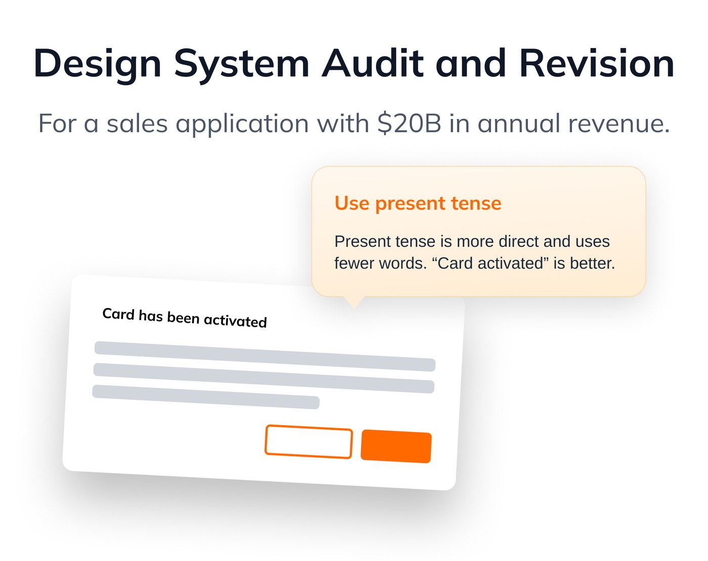
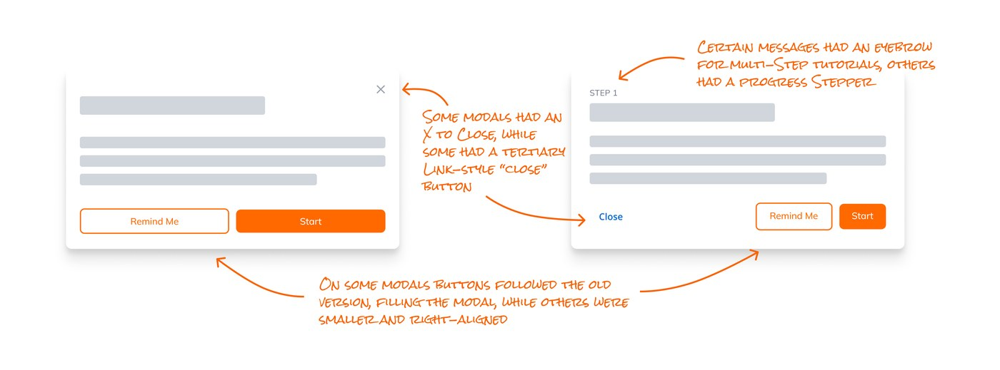

The problem
Design debt was causing huge problems across our application, and messages and alerts were an especially acute problem. Our messages had inconsistent visual and content patterns. And although we were following an enterprise-wide design system, we needed application-specific content guidelines for our specific users. We needed to gain alignment on our design patterns, clean up our existing messages, and create templates that designers and others could easily use to publish product updates, guides, and outage messages using Pendo.

The context
Various design updates had been applied inconsistently across parts of our very large and complex application. Designers were spending too much time figuring out which system version they needed to follow, negotiating with developers and PMs about what updates needed to be made, and creating one-off messages that worsened the problem. We also had picked up a contract with Pendo, an application that would allow PMs and business partners to publish urgent messages very quickly and easily without the need for coding.
Audit and Workshop
Audit
In order to solve the problem, first we had to understand the full extent of the issues. I did that by conducting an audit of the messages in our system.
I gathered messages from across our app. I collected 60+ messages and reviewed them with the team. Many of the messages were not documented in our design files so I used our LLC and production environment to find them.
I wanted to compare inconsistencies across messages with clear content and updated styling against messages with poor/confusing content and outdated styling.
Image of many messages collected during the audit.
- The audit uncovered a lot of unexpected messages that the design team was unaware of, such as exception messages that engineers had added without design oversight.
- Some messages were broken because of system updates, and some had outdated styling. These were later added to our design backlog — see the "What shipped" section at the end of this case study for more on those.
- Not all designers were following the correct, most up-to-date design system.
Before doing the workshop, I was mindful that I was a mid-level designer and the most junior member of the design team, but had been tasked to lead strategic alignment across all the product teams on our application (9 designers total) — a project that a senior or staff designer would normally lead. I felt like it was a delicate situation, so I called in backup. To help everyone leave egos at the door, I met with our overall organization's design system leadership to get feedback on my workshop preparations, to make sure that any changes we made would be in line with their work and roadmap, and to be able to use their expertise and guidance as evidence for any choices I might need to make to our design system or style guide. I reviewed our overall content guidelines and my alignment workshop plan with design leadership first, and also asked them to attend the workshop.
Alignment workshop
The workshop consisted of the following activities:
- First, I reviewed our style guides and visual design patterns with the team.
- We also examined examples I had found during the audit that illustrated correct and incorrect application of our content guidelines.
- Then we discussed these overall guidelines and whether any of them might need to change for our specific users.
- Then my teammates chose messages from the audit and examined them for how well they followed the visual and content style guides.
- Each team member then rewrote and/or redesigned the messages to follow our guidelines.
- Finally, we discussed whether any of the general (organizational) guidelines needed to change to better match our specific users' mental models.
Key findings
Our messages weren't user-friendly and didn't reflect our values of being user-centric. Not only were most of our messages not aligned with our visual design system or content style guide, they also didn't align with our design values of supporting our users. Many error modals didn't offer a path to resolution, for example, which is a core part of our design values.
We needed application-specific rules. We found specific instances where we needed to deviate from the overall organizational guidelines with rules for our specific application.
The overall organizational guidelines are to not use acronyms. But some acronyms are used so frequently by our user base — like BOPIS (Buy Online Pick Up in Store) and BOSS (Buy Online Ship to Store) — that they're very familiar to our users and become quickly known to new users. As a team we reviewed user feedback and decided together which acronyms we would abbreviate and which we would spell out.
Workshop artifact — Miro board snapshot or a before/after from a team's rewrite.
What shipped
Team reference
To wrap up the workshop, I created a reference for designers and others going forward. The reference included:
- A guide to where to look for references and rules when creating copy, including our organization's style guide and other tools — such as a "simple substitutions for complex words" tool and a tool for changing text into title case.
- Common rules that apply to our application, with examples from our application of what to do and what not to do.
Team reference — the do / don't examples from our application.
I also included links to our organization's style guide, and specific rules that we created for our individual app. I also put together tools for the team to use when creating messages, including the "simple substitutions for complex words" website and a tool for changing text into title case.
Design Jira board
We already had a design system with established files — we just needed to update outdated messages — so we created a Jira board with the parts of our application that needed updating (for both content and visuals). The designers aligned on which version to use going forward and how to push back if team members wanted to use outdated versions for speed.
Pendo templates
Based on the findings from the workshop, our visual design system, and our larger organization's style guide, I created Pendo templates for UX designers and product managers to use when announcing new features, communicating issues such as outages and feature rollbacks, and deploying feedback surveys. This involved deciding with management and the rest of the design team which out-of-the-box Pendo features we would keep, even if they weren't a part of our official design system.
Pendo guides
I reviewed user feedback on common features and workflows in the app and worked with our store operations team to create and publish contextual walkthroughs and guides to help new users understand some of the more complex selling flows (based on our new templates, of course). I defined where the guides would live in the app, the trigger types, and guidelines for future publishers, such as how many steps a guide could have.
Pendo guide — a contextual walkthrough running in the app.
After launching the guides, I examined user behavior and feedback and iterated on the guides and guide templates to make them more user-friendly.